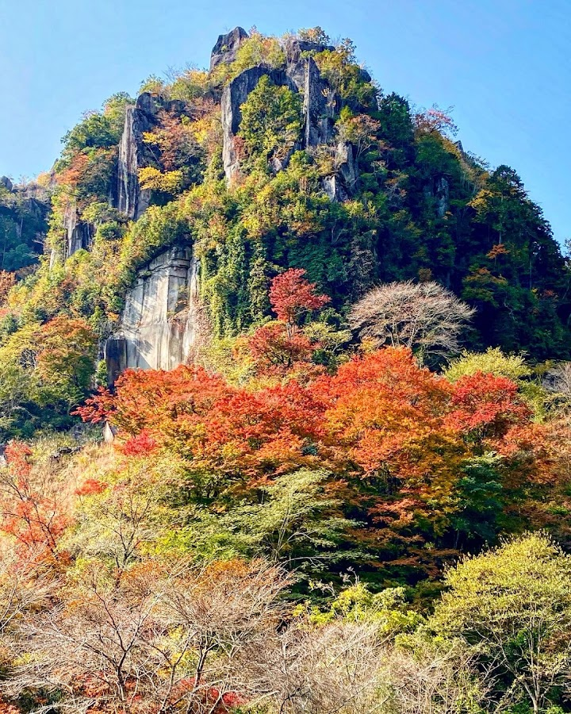
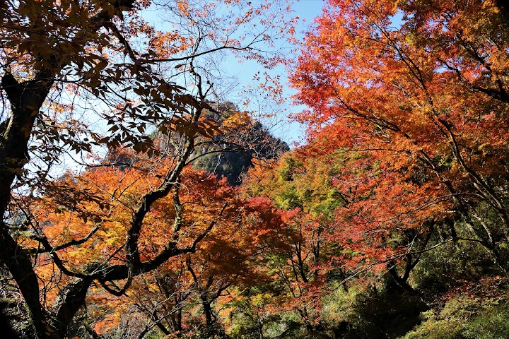
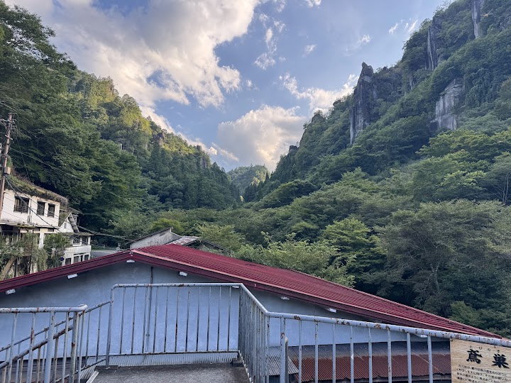
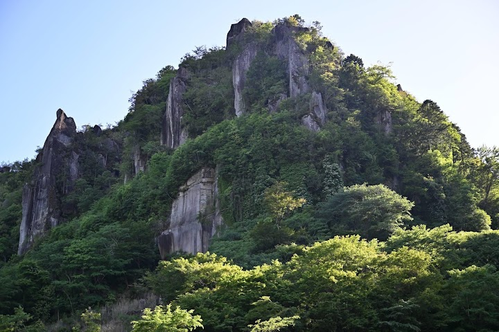
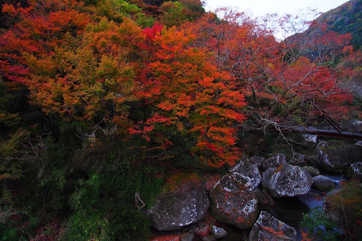

Hitome Hakkei Observation Deck
Forested river valley known for fall foliage & mountain views, with an observatory & hot springs.
Open in Google Maps (street view, more photos and reviews there)






Visitor tips on finding it and getting there
Visited on 21/11/22. Whilst the best time to see has passed, there are still plenty of red leaves en-route and near the big parking lot. The viewing platform itself is quite small but you could walk around the area by foot (we spent around an hour taking photos etc). The mountains are magnificent whether with or without red leaves! Driving through the area is such an enjoying experience.